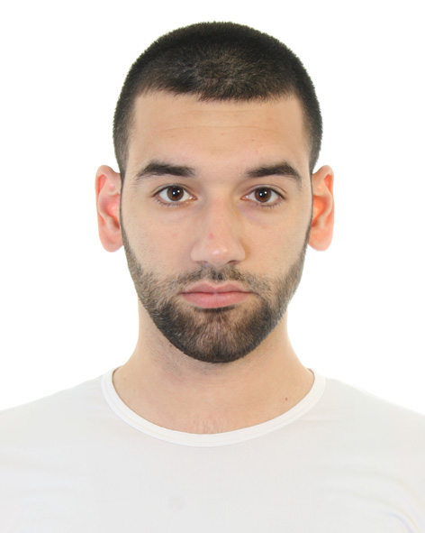

RESUME
Amarildo Koçiaj
Professional Summary
Experienced AI Trainer, Chemistry Educator, Content Manager, and Translator with a strong background in STEM subjects, linguistics, AI training, and localization. Skilled in managing AI projects, SEO, chemistry education, and data labeling. Fluent in Albanian, Italian (C1), and English (C1) with expertise in text, audio, and image labeling, and generative AI model training.
Work Experience
AI & Data Training
Outlier, Scale Labs – San Francisco, CA, USA (10/2024 – Present)
- Training AI models in Italian and English
- Specializing in linguistics and STEM subjects
AI Trainer – Alexa Shopping (Amazon)
One Forma – Barcelona, Spain (12/2024 – Present)
- Ensuring response consistency for Alexa Shopping AI in Italian
Data Labeler & AI Trainer
Alignerr, Labelbox, Inc. – San Francisco, CA, USA (10/2024 – Present)
- Labeling text, video, audio, and images
- Specializing in STEM subjects and general AI tasks
Artificial Intelligence Italian Language Trainer
Scale AI, RemoteTasks – Palo Alto, CA, USA (05/2023 – 06/2023)
- Worked on response evaluation projects for AI
- Languages: Italian, English
- Trained generative AI models
Education & Chemistry Training
Chemistry Teacher
Hasan Riza Pasha College – Shkodër, Albania (09/2018 – 08/2023)
- Taught Cambridge AS and A-Level Chemistry (Grades 10–12)
- Served as a Class Teacher for 4 years
Chemistry Online Tutor
Smart Brain Tutorial – Amsterdam, Netherlands (05/2020 – 09/2020)
- Tutored chemistry and biology online
Remote Educator
OneClass.com, Notesolution Inc. – Toronto, Canada (09/2020 – 02/2021)
- Solved and explained university-level general and organic chemistry questions
Chemistry Questions Content Writer & Editor
Key2Chem.com – USA (04/2022 – 11/2022)
- Improved 350+ chemistry course questions
Content Management & SEO
Content Manager & SEO Specialist
Kvasir Education, Proprep.com – Tel Aviv, Israel (02/2022 – Present)
- Managed the “Ask a Question” project
- Conducted SEO for chemistry, biochemistry, and biology content
- Created chemistry content and performed video editing & improvement
Translation & Localization
Film & TV Translator
Global Listings – London, UK (01/2025 – Present)
- Translated film and TV-related content from English to Albanian
- Worked on Video On Demand (VOD) services
Administrative & Virtual Back Office
Virtual Back Office Administrator
eClaim – FIGC (Federazione Italiana Giuoco Calcio) – Milan, Italy (12/2021 – 04/2025)
- Managed claims processing for Italian football federations
Education
Scientific Master’s Degree in Teaching Biology & Chemistry
Luigj Gurakuqi University of Shkodra, Albania (2016 – 2018)
- Final Grade: 9.73 / 10
- Thesis: "Didactic Treatment of Organic Reactions Mechanisms"
Bachelor’s Degree in Chemistry & Biology
Luigj Gurakuqi University of Shkodra, Albania (2013 – 2016)
- Final Grade: 8.73 / 10
- Thesis: "Chemistry General Exam – Grade 10"
Teaching License in Biology & Chemistry
QSHA – Government Albania (2019)
Languages
- Albanian – Native
- Italian – C1 (Proficient)
- English – C1 (Proficient)
Technical Skills
- AI & Data Labeling: AI training, response evaluation, annotation
- Chemistry Software: ChemDraw®, MestreNova™, LabSolution™
- Content Creation: SEO, academic writing, video editing
- Digital Tools: Google Drive, Docs, Sheets, Microsoft Office, SharePoint
- Programming & AI: Artificial Intelligence applications in language training
Certifications & Training
- Cambridge IGCSE Chemistry Training (2020, 2021) – Cambridge University Press
- AI Ethics & Communication Training – Scale AI
- Teaching Methods for Students with Learning Difficulties (2022)
- Effective Classroom Management Techniques (2022)
- Complete Python Bootcamp by Angela Yu (2025) – Udemy